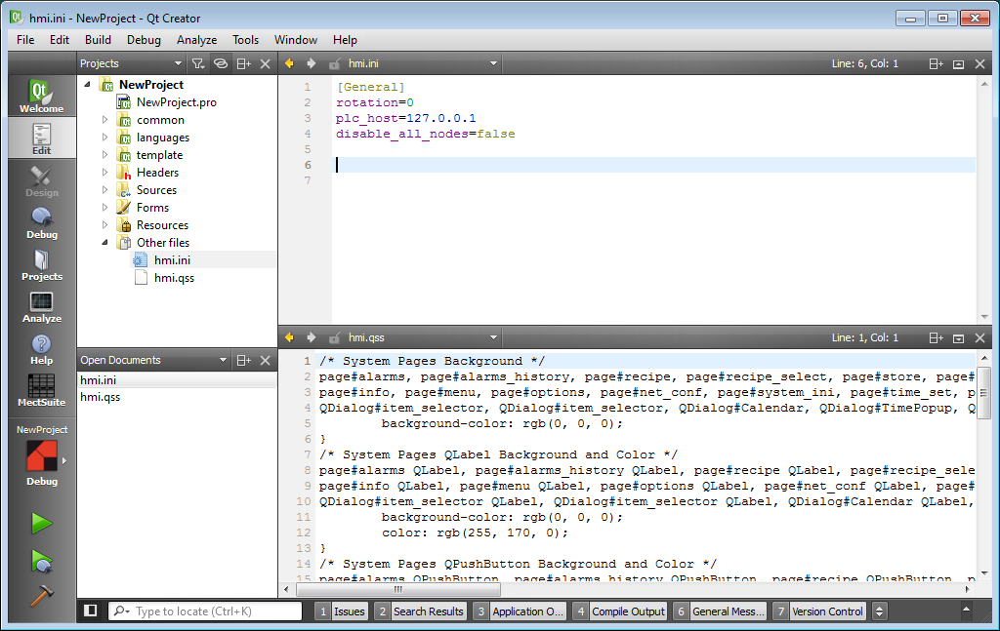

Mit der Version 3.4.x wurden zwei neue Dateien für die neuen Projekte hinzugefügt, hmi.ini und hmi.qss, gruppiert im neuen Abschnitt “Other files”.

Die Datei hmi.ini ist eine Textdatei im “Windows Ini Format”, die in Abschnitte (Titel eingeschlossen durch []) und Schlüssel = Wert-Paare organisiert ist
[General] rotation=0 plc_host=127.0.0.1 disable_all_nodes=false
Die Datei hmi.ini wird während der Bereitstellung automatisch in denselben Ordner der Anwendung kopiert. Sein Zielpfad ist /local/root/hmi.ini.
Beim Start liest das HMI-Programm den Schlüssel “disable_all_nodes” im Abschnitt [General], und wenn der Wert auf true gesetzt ist, werden die in der Anwendung definierten Remote-Knoten nicht automatisch aktiviert.
Der Standardwert ist false, um das Verhalten vorhandener Anwendungen nicht zu ändern.
Es ist daher nun möglich, komplexe Konfigurationen in Crosstable zu definieren und im cpp-Code, je nach Konfiguration auf dem Endgerät, nur die notwendigen Remote Nodes zu aktivieren, mit der Anweisung:
doWrite_NODE_xx_STATUS(1);
Die Datei hmi.ini kann verwendet werden, um andere Anwendungseinstellungen zu speichern, vorzugsweise mit anderen Abschnitten als beispielsweise [General]:
[mySession] myKey=myValue
Um den Wert des Schlüssels myKey im Abschnitt mySession zu lesen, reicht es aus, im cpp-Code:
#include<QSettings>
QSettings hmi_ini("/local/root/hmi.ini", QSettings::IniFormat);
QString myValue = hmi_ini.value("mySession/myKey").toString()
Die Datei hmi.qss ist eine Textdatei im “Qt Style Sheet”-Format (ähnlich HTML Cascading Style Sheet CSS).
Die Datei hmi.qss wird während der Bereitstellung automatisch in denselben Ordner der Anwendung kopiert. Sein Zielpfad ist /local/root/hmi.qss.
Beim Start liest das HMI-Programm (falls vorhanden) die Datei “hmi.qss” in der Hauptfunktion und interpretiert die darin enthaltenen Anweisungen für alle Anwendungsobjekte, wobei dieser Code (in der Bibliothek) ausgeführt wird:
// Loading Application QSS
QFile fileQSS(“/local/root/hmi.qss”);
if (fileQSS.exists()) {
fileQSS.open(QFile::ReadOnly);
QString styleSheet = QString(fileQSS.readAll());
fileQSS.close();
app.setStyleSheet(styleSheet);
qDebug(“Loaded hmi.qss”);
}
Um wirksam zu sein, muss dieser Vorgang ausgeführt werden, bevor die grafischen Objekte der Anwendung (Benutzer- und Systemseiten) erstellt werden.
Wenn die Datei nicht existiert, leer ist oder einen ungültigen Inhalt hat, wird sie ignoriert.
Die in den neuen Projekten bereitgestellte Datei ist ziemlich komplex, da sie nur die Bibliotheksseiten ändern soll und keine Auswirkungen auf die vom Benutzer entwickelte Anwendung hat, indem sie eine Art “Dark Theme” für die Bibliotheksseiten definiert.
Dem Benutzer bleibt die Möglichkeit, neue QSS-Anweisungen für seine Seiten hinzuzufügen oder vorhandene zu ändern, um das endgültige Erscheinungsbild des Projekts zu standardisieren.
Weitere Informationen finden Sie unter: https://doc.qt.io/archives/qt-4.8/stylesheet-examples.html#style-sheet-usage
Für die neuen Anwendungen wurde die Datei automation.cpp geändert:
Aufgrund der Optimierung der Startphase der Geräte und der Änderungen im internen Kommunikationsprotokoll zwischen SPS und HMI, eingeführt mit Version 3.3.8 der Mect Suite, wurde eine Warteschleife in die setup()-Funktion der automation.cpp eingeführt, dass die Systemvariable PLC_EngineStatus den Wert 2 erreicht (enRunning)
/* put here the initalization */
void setup(void)
{
// Wait PLC Engine gets ready
while (PLC_EngineStatus < 2) {
fputc('*', stderr);
sleep(1);
}
// Insert your start-up code here
// .....
}
Bei kleineren Werten (enIdle = 0, enInitialized) ist die Kommunikation zwischen HMI und SPS nicht gewährleistet und es ist nicht möglich, verlässliche Werte für die Crosstable-Variablen zu lesen oder zu setzen.
Daher müssen nach dieser Warteschleife Entscheidungen basierend auf den Werten von Crosstable-Variablen oder Einstellungen neuer Werte erfolgen.